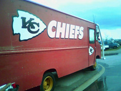

Check out the latest on what's happening with our Chiefs!
Want to know what our friends are saying... Check out these two sites for
up-to-date information as well!
To get your fill of articles and topics of the latest rumors
about the Kansas City Chiefs, take a look at our friends over
at the Arrowhead Addict.

If you want to get a great resource of information pertaining
to the Kansas City Chiefs, and enjoy looking through any of the
fan blogs, posts, or podcasts. Check out our friends over at the
Arrowhead Guys.